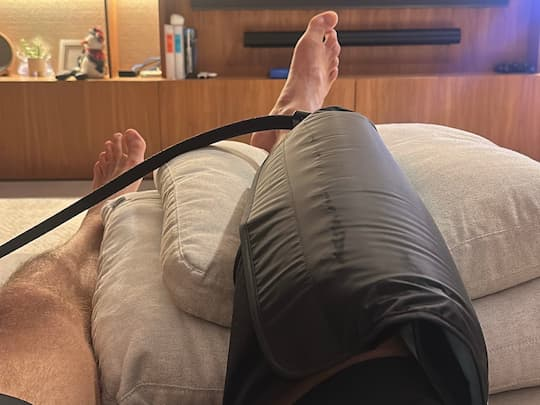
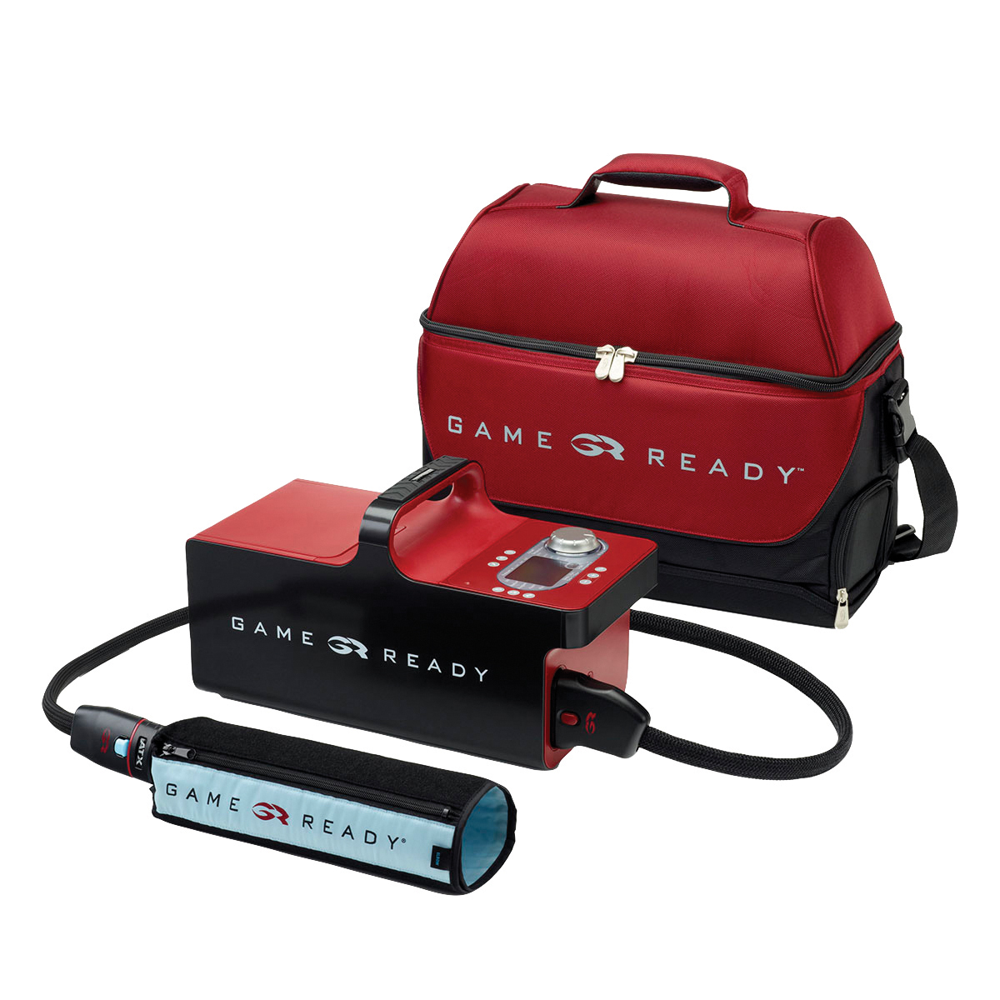

Máquinas de Gelo e Crioterapia Após Cirurgia de LCA: o “segredo” para vencer a guerra contra o inchaço
Se existe um equipamento que definiu minhas primeiras semanas no pós-operatório, foi a crioterapia. Esqueça o “saquinho de ervilha congelada”. Frio contínuo no joelho é outro nível.

Por que eu queria ter sabido disso antes
Nos primeiros dias após a cirurgia de LCA, o inchaço não parece “um líquido normal”. Parece que o joelho vai estourar. Essa fase inicial é crítica para conforto e para proteger a amplitude de movimento. Eu só fui descobrir a máquina tipo Game Ready duas semanas após a cirurgia. Eu contei o momento em que encontrei isso no meu diário aqui.
Quando comecei a usar, a diferença foi imediata. Foi um divisor de águas e eu usei bastante. A combinação de frio no joelho inteiro com compressão ativa me ajudou a controlar o inchaço de um jeito que uma bolsa de gelo comum nunca conseguiu.
Se existe um período em que eu realmente recomendo a crioterapia como assim após a cirurgia de LCA, são as primeiras 4 semanas.
“Não era só alívio de dor. Era manter o ritmo da recuperação. Cada pouco de inchaço que você evita no começo é amplitude de movimento que você não vai precisar ‘brigar’ depois.”
Game Ready (Frio + Compressão)
Compressão ativa combinada com frio “envolvendo” a articulação. É o que muitos atletas profissionais usam no pós-operatório.
- ✅ Controle de inchaço superior com bombeamento ativo
- ✅ Pressão ajustável
- ❌ Muito caro para comprar (US$ 2.500+)
- 💡 Dica: Se der, alugue por 4 semanas em vez de comprar.

Cryo Cuff Aircast (Kit Cooler + Joelheira)
É uma boa alternativa quando o Game Ready não está disponível. Funciona por gravidade, sem motor, e entrega frio com compressão - bem melhor do que só usar bolsa de gelo.
- ✅ Frio contínuo por até 3 horas sem trocar água/gelo
- ✅ Simples de usar: funciona por efeito da gravidade
- ✅ Portátil e leve (aprox. 900g vazio)
- ✅ Capacidade de até 3 litros de água e/ou gelo

Máquinas de gelo e crioterapia após cirurgia de LCA
Respostas rápidas para as perguntas que eu mais pesquisei durante a recuperação.
Máquinas de gelo realmente ajudam após cirurgia de LCA?
+
Quando devo começar a usar crioterapia após a cirurgia?
+
Com que frequência devo usar gelo nas primeiras semanas?
+
Bolsa de gelo é suficiente se eu não tiver uma máquina?
+
Eu ainda preciso de compressão se estiver usando crioterapia?
+
Como usar do jeito certo
O truque das garrafinhas congeladas
Dá para usar gelo, mas só se você tiver gelo em quantidade. Uma opção melhor é congelar 4 a 6 garrafinhas de água e ir revezando no equipamento. Elas duram mais, estão sempre prontas e deixam a limpeza muito mais fácil.
Frequência é tudo
Na semana 1, usa por 30 minutos a cada hora enquanto estava acordado. Sempre combine com elevação acima do nível do coração para maximizar o efeito. Na semana 2, reduza para 30 minutos a cada 2 horas. Nas semanas 3 e 4, usei por 30 minutos, 3 a 4 vezes por dia, conforme necessidade.
Proteção da pele
Em geral, recomenda-se uma camada fina entre a pele e o aplicador, porque alguns equipamentos conseguem gelar muito (risco de queimadura por frio). Eu não usei, então observe sua pele e ajuste se necessário.
Alívio pós-fisio
Depois da semana 6, normalmente você não vai precisar o dia inteiro. Use estrategicamente após fisioterapia ou caminhadas longas. É quando a inflamação costuma “crescer” em silêncio. Pense em prevenção, não reação. Se o inchaço começar a voltar, eu retorno ao básico com controle de inchaço e escolhas inteligentes de recuperação.